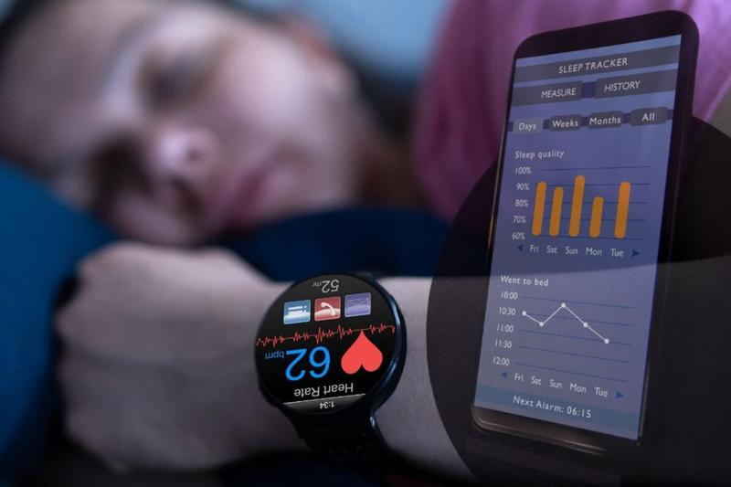
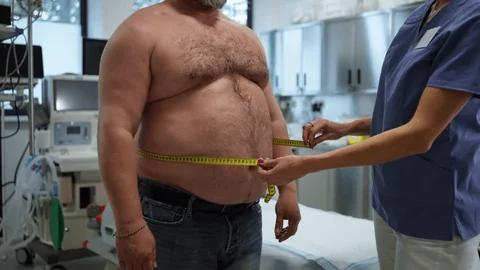

Journal
Real stories, real data, real struggles. By Alex.

Alcohol Is Sabotaging My Weight Loss
I love beer. IPAs specifically. The hoppier, the better. There's something deeply satisfying about a cold beer after a long day of debugging code. It'...

Why My Weight Fluctuates Every Day
Monday: 174.2 lbs. Tuesday: 176.8 lbs. Wednesday: 173.5 lbs. Thursday: 175.1 lbs. If I didn't know better, I'd think my scale was broken. Or that I wa...

Why I Don't Trust Smart Scales
I own a smart scale. It cost me eighty dollars and promised to track not just weight, but body fat percentage, muscle mass, bone density, water percen...

Why Gym Scales Never Match My Home Scale
I weigh 174.2 pounds on my home scale. I go to the gym, use their scale, and it says 176.8. Which one is right? I used to think the gym scale was more...

Why BMI Is Broken for Athletes
I used to train with a guy named Mike at the gym near my apartment in Denver. Mike is 5'10

Walking 10,000 Steps Changed My BMI
I bought a cheap pedometer on Amazon for twelve dollars. It was an impulse purchase at 11 PM after reading yet another article about how

Why I Stopped Weighing Myself Every Day
Why I Stopped Weighing Myself Every Day I used to step on the scale every morning. 7:15 AM, before coffee, same routine. The number dictated my mood....

Why I Deleted My Fitness App After Using It for 2 Years
Why I Deleted My Fitness App After Using It for 2 Years MyFitnessPal. Two years. Every meal. Every snack. Every coffee. Weighed food. Scanned barcode...

I Stopped Weighing Myself Every Day
I Stopped Weighing Myself Every Day I used to step on the scale every morning. 7:15 AM, before coffee, same routine. The number dictated my mood. 174...

What I Learned From 6 Months of Failed Diet Attempts
What I Learned From 6 Months of Failed Diet Attempts January: Keto. Lost 5 pounds in two weeks. Felt terrible. Brain fog. Constipated. Gave up after ...

What 8 Months of Data Taught Me About My Body
What 8 Months of Data Taught Me About My Body Logging weight since September. 34 entries. Not every week (missed some), but consistent. Looking at d...

The Weekend Weight Rebound Is Real
Every Monday morning, I step on the scale and curse. Without fail, I'm two to four pounds heavier than Friday. Every. Single. Week. For a while, I tho...

The Weird Thing That Happened When I Started Tracking My Sleep
The Weird Thing That Happened When I Started Tracking My Sleep Bought a cheap fitness tracker on Amazon. $35. Tracks steps, heart rate, sleep. Wante...
The Saturday Morning Routine That Actually Works
The Saturday Morning Routine That Actually Works Saturday mornings are my anchor. One consistent thing in chaotic weeks. 6:30 AM: Wake up. No alarm....
The Day I Ate an Entire Pizza and Didn't Log It
The Day I Ate an Entire Pizza and Didn

My Doctor Said My BMI Is 'Borderline' and I Got Defensive
My Doctor Said My BMI Is

I Tried Intermittent Fasting for 30 Days and Here's What Actually Happened
I Tried Intermittent Fasting for 30 Days and Here
How I Explain My Weird Health Website to Dates
How I Explain My Weird Health Website to Dates Been dating a bit. Nothing serious. Coffee, drinks. Denver scene.

Stress Eating Is My Biggest Enemy
I don't overeat when I'm happy. I don't overeat when I'm bored. I overeat when I'm stressed. Not hungry-stressed. Just stressed. Deadline at work. Arg...

Sleep Deprivation Made Me Gain Weight
Last quarter at work was brutal. Three major deadlines, two production incidents, and a manager who thought

Protein Intake Changed My Body Composition
For most of my twenties, I ate like a college student who never graduated. Pasta, pizza, sandwiches, cereal. Carbs and more carbs, with occasional mea...

My Desk Job Is Destroying My Health
I sit for ten hours a day. Not because I want to. Because my job requires it. I'm a software engineer. My tools are a keyboard and a monitor. There's ...

I Tried OMAD for a Week
OMAD stands for One Meal a Day. It's exactly what it sounds like: you fast for twenty-three hours, then eat all your daily calories in a single hour. ...
I Tried Keto for One Week and Quit
My coworker Dave lost twenty pounds on keto in two months. He wouldn't shut up about it.

I Quit Soda for 30 Days
I used to drink two to three cans of Diet Coke a day. Not regular Coke. Diet. The zero-calorie kind. I told myself it was fine because there were no c...

How I Track My Weight With a Spreadsheet
Three months ago, I got fed up with my phone app. It wanted permissions, it wanted cloud sync, it wanted to sell me a premium subscription to see my o...

How I Set Realistic Weight Goals
When I first decided to lose weight, I picked a number out of thin air. I wanted to weigh 160 pounds. Why? Because it sounded good. Because it was a r...

How I Got My Roommate to Track BMI
My roommate Jake is the opposite of me. He doesn't track anything. He doesn't weigh himself. He eats what he wants, when he wants, and somehow maintai...

Drinking Water Changed My Weight Chart
I used to drink maybe two glasses of water a day. The rest was coffee, Diet Coke, and whatever was in the office fridge. I didn't think it mattered fo...

Cooking at Home Saved My Diet
I used to eat out for almost every meal. Breakfast was a breakfast sandwich from the cafe near work. Lunch was whatever the team ordered. Dinner was t...

Carbs Are Not the Enemy
The anti-carb movement has gone too far. I can't open social media without seeing someone demonizing bread, pasta, or fruit.